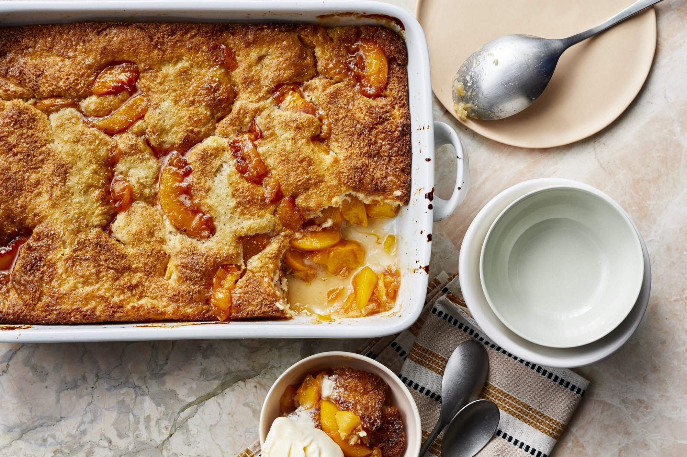
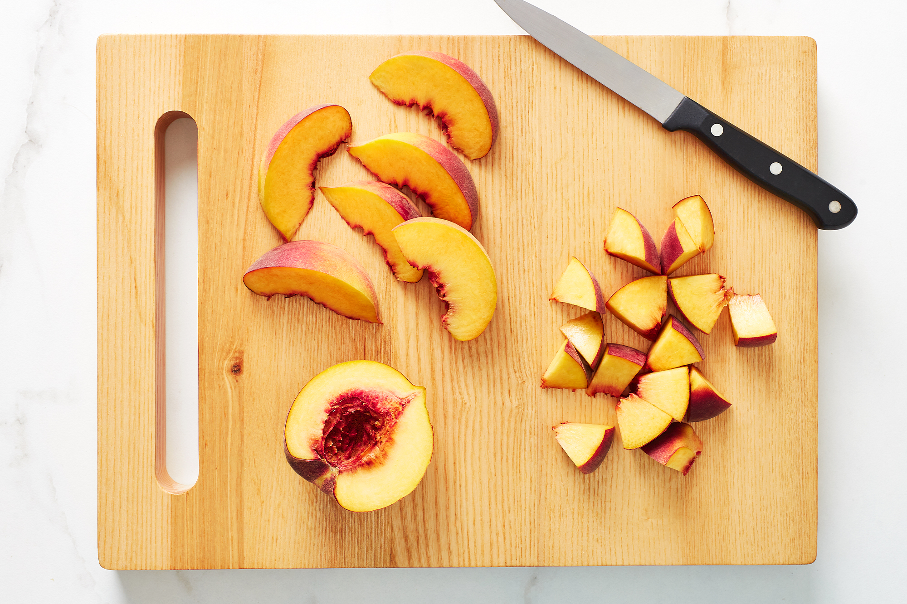

Southern Peach Cobler
Get all your Southern fixin's with this delicious peach cobbler!
Ingredients
- 1/2 cup unsalted butter
- 1 cup all-purpose flour
- 2 cups sugar, divided
- 1 tablespoon baking powder
- pinch of salt
- 1 cup of milk
- 4 cups fresh peach slices
- 1 tablespoon lemon juice
- ground cinnamon or nutmeg (optional)
Directions
- Melt butter in a 13- x 9-inch baking dish.
- Combine flour, 1 cup sugar, baking powder, and salt; add milk, stirring just until dry ingredients are moistened. Pour batter over butter (do not stir).
- Bring remaining 1 cup sugar, peach slices, and lemon juice to a boil over high heat, stirring constantly; pour over batter (do not stir). Sprinkle with cinnamon, if desired.
- Bake at 375°F for 40 to 45 minutes or until golden brown. Serve cobbler warm or cool.
|  |
 |
 |